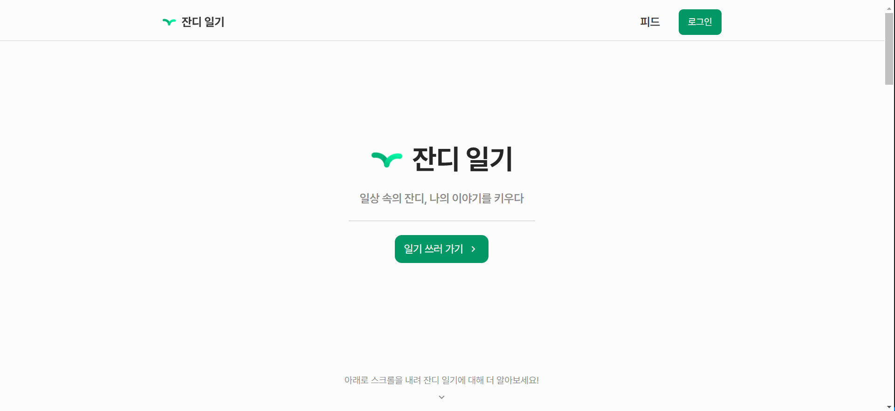
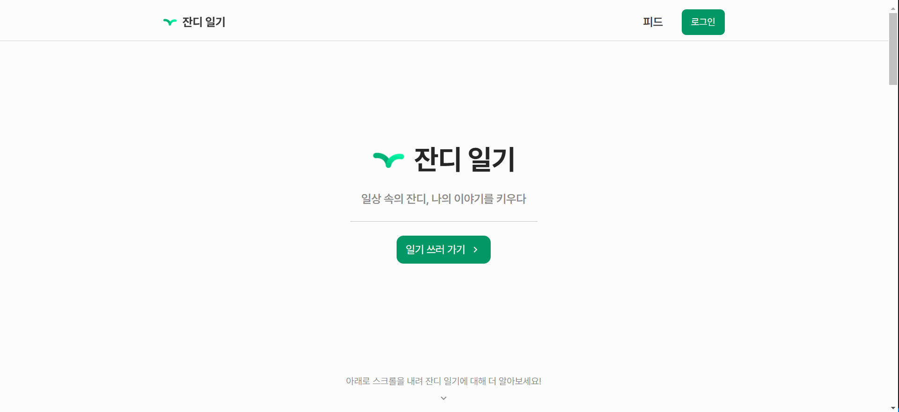

잔디 일기
잔디일기는 일상을 기록해 소중한 순간들을 남기는 일기 서비스예요 ✨
잔디일기는 일상을 기록해 소중한 순간들을 남기는 일기 서비스예요 ✨
📣 프로젝트 소개
기획자, UX/UI 디자이너, BE, FE 다양한 직무의 팀원들과 함께 진행한 일기 서비스 프로젝트로, 현재는 최적화 작업 및 유지보수를 진행하고 있습니다.
일기를 쓰면 잔디가 하나씩 심어지고 리워드를 받아 다양한 아이템 구매를 통해 잔디를 꾸밀
수 있어요.
다양한 동기부여 요소와 함께 꾸준한 일기 작성을 도모하며 그 과정에서 자신을 알아갈 수
있는 기회를 얻을 수 있답니다.
⏰ 기간
2024.02 ~ 진행 중🛠 사용한 기술 스택
🔖 배포 및 CI/CD
배포 주소 👉 https://grassdiary.site/
github Link 👉 Grass-Diary-Client